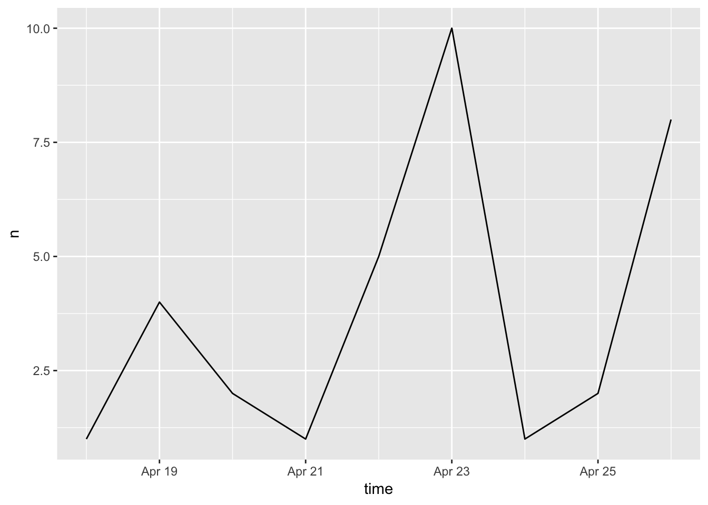
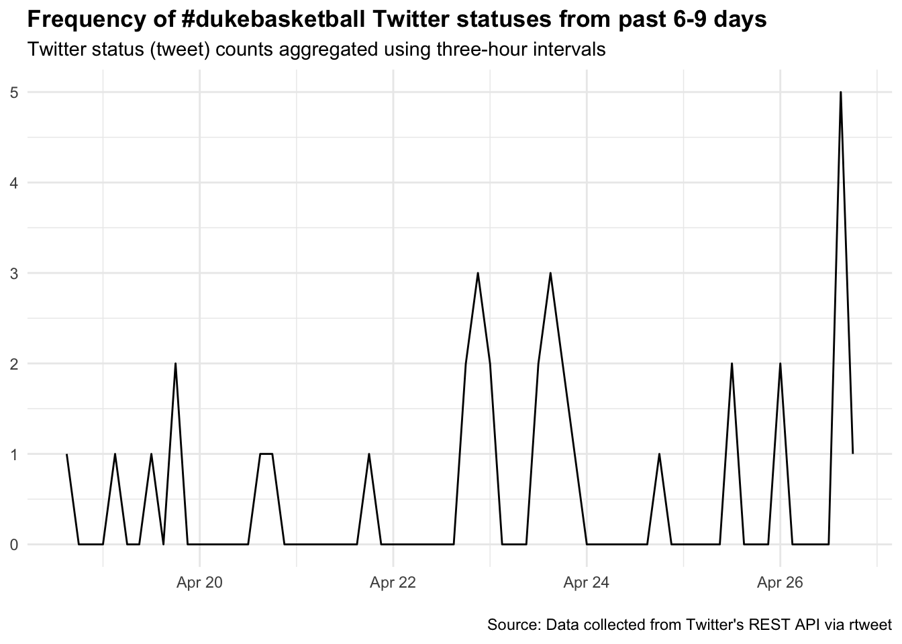
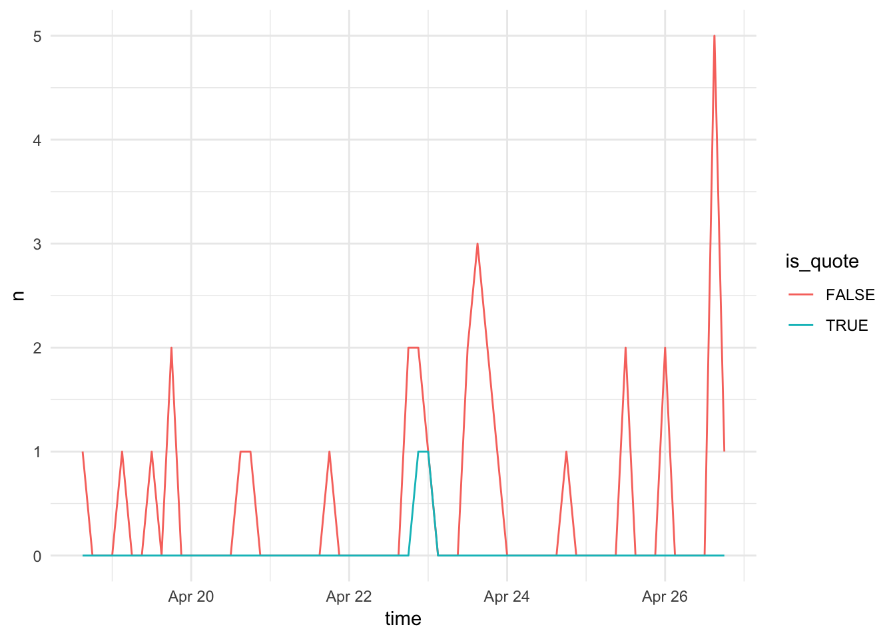
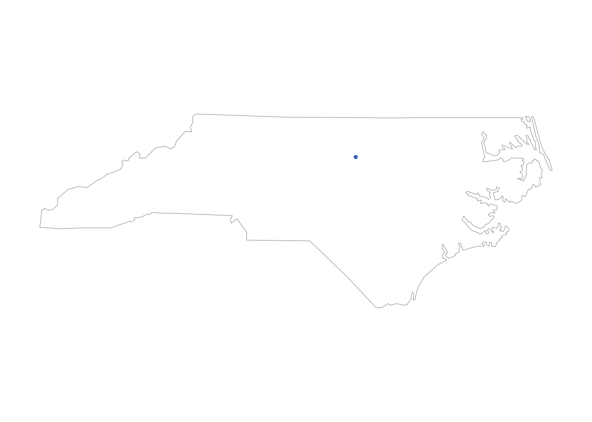
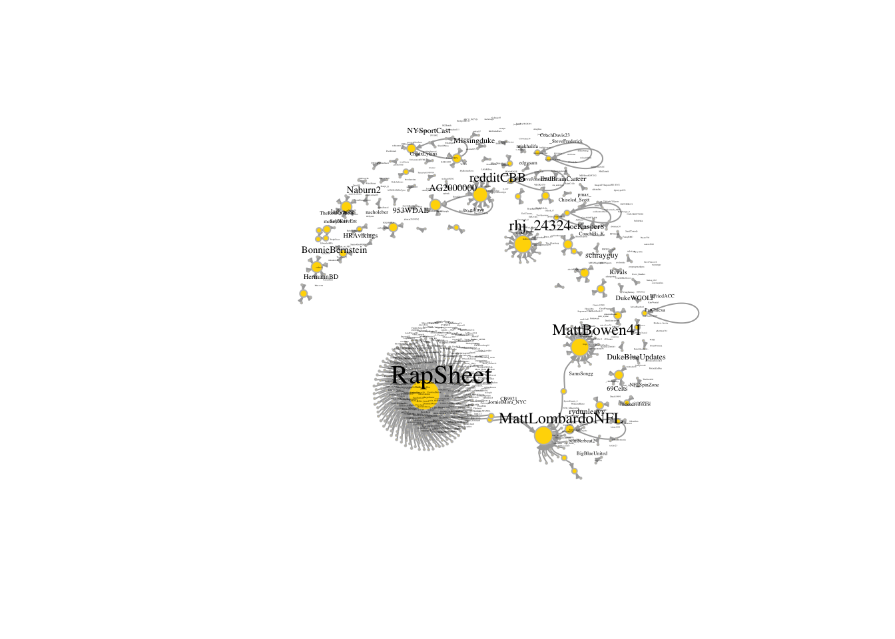
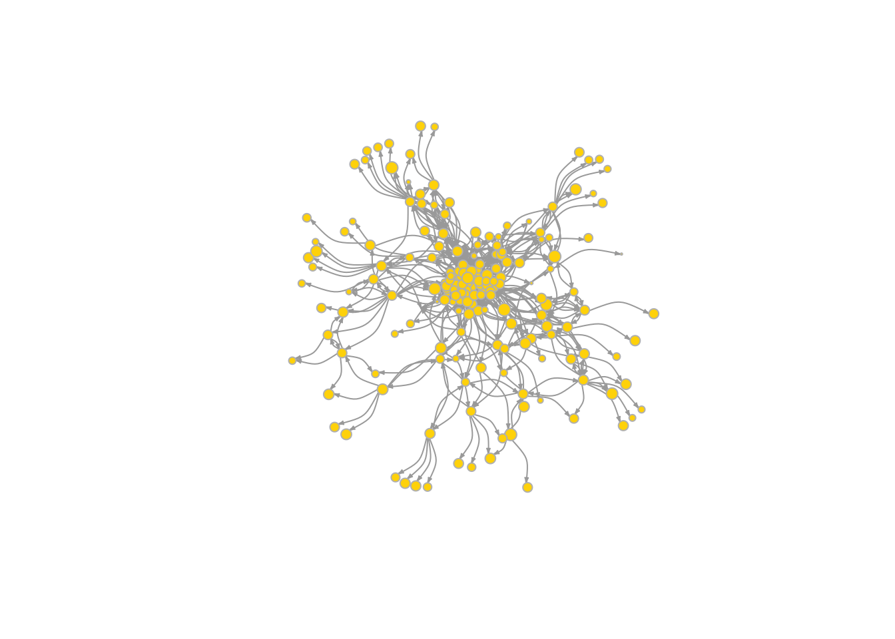

4 Collect network data and API requests
4.1 Several useful websites
4.2 Web scraping
- Web APIs (application programming interface): website offers a set of structured http requests that return JSON or XML files.
- R packages:
rtweet(twitter),Rfacebook(facebook),RedditExtractoR(reddit),imdbapi(IMDB),omdbapi(The Open Movie Database).- Using
rtweetto make API requests - Construct Retweet networks
- Construct Friendship networks
- Using
- API request from R.
rjson(map JSON file to datafram),rvest(web scrapping).
4.3 Preparation
library(dplyr)
library(igraph)
library(purrr)
library("stringr")4.4 Twitter API request
4.4.1 R package rtweet
Official website: https://rtweet.info/index.html
Explore the official websites to find more info.
- All the functions
- Tutorial
- FAQ (possible issues)
Good documentation; Recommended over another R package twitteR.
4.4.2 Preparation
#install.packages("rtweet")
library("rtweet")4.4.4 rtweet
API request
- Tweeter Developer
- Send a request specifying parameters; Get response in JSON format
search_tweets: sampling from tweets in past 7 days matching keywords (specified # of tweets) – recent/popular/mixedstream_tweets: sampling/keyword-filter/user-track/geo-location live stream for future time period;(specified time period)
4.4.4.1 search_tweets
- limiting searches to 10 keywords and operators
- only past 6-9 days of Tweets
Parameters:
help()or see https://developer.twitter.com/en/docs/tweets/search/api-reference/get-search-tweetsq: Query to be searched.- Spaces/AND – both (“data science”;“data AND science”);
- OR – either or (data OR science);
- ’"“’ – exact (‘“data science”’;”"data science"");
- “#datascience” – track hashtag;
- “@duke” – track at.
- More about operators
n: total number of desired tweets.- At most 18,000 in a single call;
- For \(>\) 18,000,
retryonratelimit=TRUE
type: “recent”,“popular”,“mixed”include_rts: whether to include retweetsgeocode: “latitude,longitude,radius”lang: languageparse: TRUE(dateframe); FALSE(list)
rt <- search_tweets(
q="#dukebasketball", #Query to be searched
n = 10,
include_rts=FALSE,
result_type="recent",
geocode = "36.00,-78.94,5mi"
)## Searching for tweets...## Finished collecting tweets!rt## # A tibble: 4 x 88
## user_id status_id created_at screen_name text source
## <chr> <chr> <dttm> <chr> <chr> <chr>
## 1 109257… 11208030… 2019-04-23 21:34:08 rj5nation "Do … Twitt…
## 2 109257… 11200524… 2019-04-21 19:51:29 rj5nation "Tag… Twitt…
## 3 109257… 11196528… 2019-04-20 17:23:31 rj5nation "NBA… Twitt…
## 4 202752… 11207366… 2019-04-23 17:10:09 BlueBloodR… "#Re… Insta…
## # … with 82 more variables: display_text_width <dbl>,
## # reply_to_status_id <lgl>, reply_to_user_id <lgl>,
## # reply_to_screen_name <lgl>, is_quote <lgl>, is_retweet <lgl>,
## # favorite_count <int>, retweet_count <int>, hashtags <list>,
## # symbols <list>, urls_url <list>, urls_t.co <list>,
## # urls_expanded_url <list>, media_url <list>, media_t.co <list>,
## # media_expanded_url <list>, media_type <list>, ext_media_url <list>,
## # ext_media_t.co <list>, ext_media_expanded_url <list>,
## # ext_media_type <chr>, mentions_user_id <list>,
## # mentions_screen_name <list>, lang <chr>, quoted_status_id <chr>,
## # quoted_text <chr>, quoted_created_at <dttm>, quoted_source <chr>,
## # quoted_favorite_count <int>, quoted_retweet_count <int>,
## # quoted_user_id <chr>, quoted_screen_name <chr>, quoted_name <chr>,
## # quoted_followers_count <int>, quoted_friends_count <int>,
## # quoted_statuses_count <int>, quoted_location <chr>,
## # quoted_description <chr>, quoted_verified <lgl>,
## # retweet_status_id <chr>, retweet_text <chr>,
## # retweet_created_at <dttm>, retweet_source <chr>,
## # retweet_favorite_count <int>, retweet_retweet_count <int>,
## # retweet_user_id <chr>, retweet_screen_name <chr>, retweet_name <chr>,
## # retweet_followers_count <int>, retweet_friends_count <int>,
## # retweet_statuses_count <int>, retweet_location <chr>,
## # retweet_description <chr>, retweet_verified <lgl>, place_url <chr>,
## # place_name <chr>, place_full_name <chr>, place_type <chr>,
## # country <chr>, country_code <chr>, geo_coords <list>,
## # coords_coords <list>, bbox_coords <list>, status_url <chr>,
## # name <chr>, location <chr>, description <chr>, url <chr>,
## # protected <lgl>, followers_count <int>, friends_count <int>,
## # listed_count <int>, statuses_count <int>, favourites_count <int>,
## # account_created_at <dttm>, verified <lgl>, profile_url <chr>,
## # profile_expanded_url <chr>, account_lang <chr>,
## # profile_banner_url <chr>, profile_background_url <chr>,
## # profile_image_url <chr>rt <- search_tweets(
"trump OR president", n = 10,
lang = "en"
)## Searching for tweets...
## Finished collecting tweets!rt## # A tibble: 8 x 88
## user_id status_id created_at screen_name text source
## <chr> <chr> <dttm> <chr> <chr> <chr>
## 1 227299… 11222551… 2019-04-27 21:44:10 PSheppardTV "For… Twitt…
## 2 282827… 11222551… 2019-04-27 21:44:10 mkthomas @Aly… Twitt…
## 3 246839… 11222551… 2019-04-27 21:44:10 JeffTeichr… @Fir… Twitt…
## 4 193587… 11222551… 2019-04-27 21:44:10 7thgatefil… "In … Twitt…
## 5 744894… 11222551… 2019-04-27 21:44:10 Cascada57 By r… Twitt…
## 6 864062… 11222551… 2019-04-27 21:44:10 Rowdystyle… Rais… Twitt…
## 7 319082… 11222551… 2019-04-27 21:44:10 stemcellpa… "Ave… Twitt…
## 8 110678… 11222551… 2019-04-27 21:44:10 SHERIFFPT "\"L… Twitt…
## # … with 82 more variables: display_text_width <dbl>,
## # reply_to_status_id <chr>, reply_to_user_id <chr>,
## # reply_to_screen_name <chr>, is_quote <lgl>, is_retweet <lgl>,
## # favorite_count <int>, retweet_count <int>, hashtags <list>,
## # symbols <list>, urls_url <list>, urls_t.co <list>,
## # urls_expanded_url <list>, media_url <list>, media_t.co <list>,
## # media_expanded_url <list>, media_type <list>, ext_media_url <list>,
## # ext_media_t.co <list>, ext_media_expanded_url <list>,
## # ext_media_type <chr>, mentions_user_id <list>,
## # mentions_screen_name <list>, lang <chr>, quoted_status_id <chr>,
## # quoted_text <chr>, quoted_created_at <dttm>, quoted_source <chr>,
## # quoted_favorite_count <int>, quoted_retweet_count <int>,
## # quoted_user_id <chr>, quoted_screen_name <chr>, quoted_name <chr>,
## # quoted_followers_count <int>, quoted_friends_count <int>,
## # quoted_statuses_count <int>, quoted_location <chr>,
## # quoted_description <chr>, quoted_verified <lgl>,
## # retweet_status_id <chr>, retweet_text <chr>,
## # retweet_created_at <dttm>, retweet_source <chr>,
## # retweet_favorite_count <int>, retweet_retweet_count <int>,
## # retweet_user_id <chr>, retweet_screen_name <chr>, retweet_name <chr>,
## # retweet_followers_count <int>, retweet_friends_count <int>,
## # retweet_statuses_count <int>, retweet_location <chr>,
## # retweet_description <chr>, retweet_verified <lgl>, place_url <chr>,
## # place_name <chr>, place_full_name <chr>, place_type <chr>,
## # country <chr>, country_code <chr>, geo_coords <list>,
## # coords_coords <list>, bbox_coords <list>, status_url <chr>,
## # name <chr>, location <chr>, description <chr>, url <chr>,
## # protected <lgl>, followers_count <int>, friends_count <int>,
## # listed_count <int>, statuses_count <int>, favourites_count <int>,
## # account_created_at <dttm>, verified <lgl>, profile_url <chr>,
## # profile_expanded_url <chr>, account_lang <chr>,
## # profile_banner_url <chr>, profile_background_url <chr>,
## # profile_image_url <chr>search_tweets(
q="#dukebasketball", #Query to be searched
n = 10,
include_rts=FALSE,
result_type="recent",
geocode = "36.00,-78.94,5mi"
)## Searching for tweets...
## Finished collecting tweets!## # A tibble: 4 x 88
## user_id status_id created_at screen_name text source
## <chr> <chr> <dttm> <chr> <chr> <chr>
## 1 109257… 11208030… 2019-04-23 21:34:08 rj5nation "Do … Twitt…
## 2 109257… 11200524… 2019-04-21 19:51:29 rj5nation "Tag… Twitt…
## 3 109257… 11196528… 2019-04-20 17:23:31 rj5nation "NBA… Twitt…
## 4 202752… 11207366… 2019-04-23 17:10:09 BlueBloodR… "#Re… Insta…
## # … with 82 more variables: display_text_width <dbl>,
## # reply_to_status_id <lgl>, reply_to_user_id <lgl>,
## # reply_to_screen_name <lgl>, is_quote <lgl>, is_retweet <lgl>,
## # favorite_count <int>, retweet_count <int>, hashtags <list>,
## # symbols <list>, urls_url <list>, urls_t.co <list>,
## # urls_expanded_url <list>, media_url <list>, media_t.co <list>,
## # media_expanded_url <list>, media_type <list>, ext_media_url <list>,
## # ext_media_t.co <list>, ext_media_expanded_url <list>,
## # ext_media_type <chr>, mentions_user_id <list>,
## # mentions_screen_name <list>, lang <chr>, quoted_status_id <chr>,
## # quoted_text <chr>, quoted_created_at <dttm>, quoted_source <chr>,
## # quoted_favorite_count <int>, quoted_retweet_count <int>,
## # quoted_user_id <chr>, quoted_screen_name <chr>, quoted_name <chr>,
## # quoted_followers_count <int>, quoted_friends_count <int>,
## # quoted_statuses_count <int>, quoted_location <chr>,
## # quoted_description <chr>, quoted_verified <lgl>,
## # retweet_status_id <chr>, retweet_text <chr>,
## # retweet_created_at <dttm>, retweet_source <chr>,
## # retweet_favorite_count <int>, retweet_retweet_count <int>,
## # retweet_user_id <chr>, retweet_screen_name <chr>, retweet_name <chr>,
## # retweet_followers_count <int>, retweet_friends_count <int>,
## # retweet_statuses_count <int>, retweet_location <chr>,
## # retweet_description <chr>, retweet_verified <lgl>, place_url <chr>,
## # place_name <chr>, place_full_name <chr>, place_type <chr>,
## # country <chr>, country_code <chr>, geo_coords <list>,
## # coords_coords <list>, bbox_coords <list>, status_url <chr>,
## # name <chr>, location <chr>, description <chr>, url <chr>,
## # protected <lgl>, followers_count <int>, friends_count <int>,
## # listed_count <int>, statuses_count <int>, favourites_count <int>,
## # account_created_at <dttm>, verified <lgl>, profile_url <chr>,
## # profile_expanded_url <chr>, account_lang <chr>,
## # profile_banner_url <chr>, profile_background_url <chr>,
## # profile_image_url <chr>- dataframe: each row a tweet
users_data: only extract user-related columnts_plotlat_lng
## search for 18000 tweets using the rstats hashtag
rt <- search_tweets(
"#dukebasketball", n = 50000, include_rts = FALSE,
geocode = "36.00,-78.94,2000mi"
)## Searching for tweets...## This may take a few seconds...## Finished collecting tweets!rt_dmbb=rt
class(rt)## [1] "tbl_df" "tbl" "data.frame"## preview tweets data
names(rt)## [1] "user_id" "status_id"
## [3] "created_at" "screen_name"
## [5] "text" "source"
## [7] "display_text_width" "reply_to_status_id"
## [9] "reply_to_user_id" "reply_to_screen_name"
## [11] "is_quote" "is_retweet"
## [13] "favorite_count" "retweet_count"
## [15] "hashtags" "symbols"
## [17] "urls_url" "urls_t.co"
## [19] "urls_expanded_url" "media_url"
## [21] "media_t.co" "media_expanded_url"
## [23] "media_type" "ext_media_url"
## [25] "ext_media_t.co" "ext_media_expanded_url"
## [27] "ext_media_type" "mentions_user_id"
## [29] "mentions_screen_name" "lang"
## [31] "quoted_status_id" "quoted_text"
## [33] "quoted_created_at" "quoted_source"
## [35] "quoted_favorite_count" "quoted_retweet_count"
## [37] "quoted_user_id" "quoted_screen_name"
## [39] "quoted_name" "quoted_followers_count"
## [41] "quoted_friends_count" "quoted_statuses_count"
## [43] "quoted_location" "quoted_description"
## [45] "quoted_verified" "retweet_status_id"
## [47] "retweet_text" "retweet_created_at"
## [49] "retweet_source" "retweet_favorite_count"
## [51] "retweet_retweet_count" "retweet_user_id"
## [53] "retweet_screen_name" "retweet_name"
## [55] "retweet_followers_count" "retweet_friends_count"
## [57] "retweet_statuses_count" "retweet_location"
## [59] "retweet_description" "retweet_verified"
## [61] "place_url" "place_name"
## [63] "place_full_name" "place_type"
## [65] "country" "country_code"
## [67] "geo_coords" "coords_coords"
## [69] "bbox_coords" "status_url"
## [71] "name" "location"
## [73] "description" "url"
## [75] "protected" "followers_count"
## [77] "friends_count" "listed_count"
## [79] "statuses_count" "favourites_count"
## [81] "account_created_at" "verified"
## [83] "profile_url" "profile_expanded_url"
## [85] "account_lang" "profile_banner_url"
## [87] "profile_background_url" "profile_image_url"## preview users data
users_data(rt)%>%names()## [1] "user_id" "screen_name"
## [3] "name" "location"
## [5] "description" "url"
## [7] "protected" "followers_count"
## [9] "friends_count" "listed_count"
## [11] "statuses_count" "favourites_count"
## [13] "account_created_at" "verified"
## [15] "profile_url" "profile_expanded_url"
## [17] "account_lang" "profile_banner_url"
## [19] "profile_background_url" "profile_image_url"## plot time series (if ggplot2 is installed)
ts_plot(rt) #Duke vs No. 16 Louisville
4.4.4.2 search_tweets2
Search different queries independently.
Other parameters are the same.
st2 <- search_tweets2(
c("\"data science\"", "rstats OR python"),
n = 50
)## Searching for tweets...## Finished collecting tweets!## Searching for tweets...## Finished collecting tweets!st2$query## [1] "\"data science\"" "\"data science\"" "\"data science\""
## [4] "\"data science\"" "\"data science\"" "\"data science\""
## [7] "\"data science\"" "\"data science\"" "\"data science\""
## [10] "\"data science\"" "\"data science\"" "\"data science\""
## [13] "\"data science\"" "\"data science\"" "\"data science\""
## [16] "\"data science\"" "\"data science\"" "\"data science\""
## [19] "\"data science\"" "\"data science\"" "\"data science\""
## [22] "\"data science\"" "\"data science\"" "\"data science\""
## [25] "\"data science\"" "\"data science\"" "\"data science\""
## [28] "\"data science\"" "\"data science\"" "\"data science\""
## [31] "\"data science\"" "\"data science\"" "\"data science\""
## [34] "\"data science\"" "\"data science\"" "\"data science\""
## [37] "\"data science\"" "\"data science\"" "\"data science\""
## [40] "\"data science\"" "\"data science\"" "\"data science\""
## [43] "\"data science\"" "\"data science\"" "\"data science\""
## [46] "\"data science\"" "\"data science\"" "\"data science\""
## [49] "\"data science\"" "\"data science\"" "rstats OR python"
## [52] "rstats OR python" "rstats OR python" "rstats OR python"
## [55] "rstats OR python" "rstats OR python" "rstats OR python"
## [58] "rstats OR python" "rstats OR python" "rstats OR python"
## [61] "rstats OR python" "rstats OR python" "rstats OR python"
## [64] "rstats OR python" "rstats OR python" "rstats OR python"
## [67] "rstats OR python" "rstats OR python" "rstats OR python"
## [70] "rstats OR python" "rstats OR python" "rstats OR python"
## [73] "rstats OR python" "rstats OR python" "rstats OR python"
## [76] "rstats OR python" "rstats OR python" "rstats OR python"
## [79] "rstats OR python" "rstats OR python" "rstats OR python"
## [82] "rstats OR python" "rstats OR python" "rstats OR python"
## [85] "rstats OR python" "rstats OR python" "rstats OR python"
## [88] "rstats OR python" "rstats OR python" "rstats OR python"
## [91] "rstats OR python" "rstats OR python" "rstats OR python"
## [94] "rstats OR python" "rstats OR python" "rstats OR python"
## [97] "rstats OR python"names(st2)## [1] "user_id" "status_id"
## [3] "created_at" "screen_name"
## [5] "text" "source"
## [7] "display_text_width" "reply_to_status_id"
## [9] "reply_to_user_id" "reply_to_screen_name"
## [11] "is_quote" "is_retweet"
## [13] "favorite_count" "retweet_count"
## [15] "hashtags" "symbols"
## [17] "urls_url" "urls_t.co"
## [19] "urls_expanded_url" "media_url"
## [21] "media_t.co" "media_expanded_url"
## [23] "media_type" "ext_media_url"
## [25] "ext_media_t.co" "ext_media_expanded_url"
## [27] "ext_media_type" "mentions_user_id"
## [29] "mentions_screen_name" "lang"
## [31] "quoted_status_id" "quoted_text"
## [33] "quoted_created_at" "quoted_source"
## [35] "quoted_favorite_count" "quoted_retweet_count"
## [37] "quoted_user_id" "quoted_screen_name"
## [39] "quoted_name" "quoted_followers_count"
## [41] "quoted_friends_count" "quoted_statuses_count"
## [43] "quoted_location" "quoted_description"
## [45] "quoted_verified" "retweet_status_id"
## [47] "retweet_text" "retweet_created_at"
## [49] "retweet_source" "retweet_favorite_count"
## [51] "retweet_retweet_count" "retweet_user_id"
## [53] "retweet_screen_name" "retweet_name"
## [55] "retweet_followers_count" "retweet_friends_count"
## [57] "retweet_statuses_count" "retweet_location"
## [59] "retweet_description" "retweet_verified"
## [61] "place_url" "place_name"
## [63] "place_full_name" "place_type"
## [65] "country" "country_code"
## [67] "geo_coords" "coords_coords"
## [69] "bbox_coords" "status_url"
## [71] "name" "location"
## [73] "description" "url"
## [75] "protected" "followers_count"
## [77] "friends_count" "listed_count"
## [79] "statuses_count" "favourites_count"
## [81] "account_created_at" "verified"
## [83] "profile_url" "profile_expanded_url"
## [85] "account_lang" "profile_banner_url"
## [87] "profile_background_url" "profile_image_url"
## [89] "query"4.4.4.3 Visualization
research_tweets returns a dataframe. Visualization based on the dataframe.
ts_plot: Creates a ggplot2 plot of the frequency of tweets over a specified interval of time. Usingggplot2;- Map: Using
lat_lng
## plot time series of tweets
ts_plot(rt_dmbb, "3 hours") + # a ggplot object
ggplot2::theme_minimal() + # Add multiple layers directly
ggplot2::theme(plot.title = ggplot2::element_text(face = "bold")) +
ggplot2::labs(
x = NULL, y = NULL,
title = "Frequency of #dukebasketball Twitter statuses from past 6-9 days",
subtitle = "Twitter status (tweet) counts aggregated using three-hour intervals",
caption = "\nSource: Data collected from Twitter's REST API via rtweet"
)
# an example using `groupby` with ggplot2
ts_plot(rt_dmbb%>%dplyr::group_by(is_quote), "3 hours") + # a ggplot object
ggplot2::theme_minimal()
#install.packages("maps")
## create lat/lng variables using all available tweet and profile geo-location data
rt_dmbbll <- lat_lng(rt_dmbb)
names(rt_dmbbll)[!names(rt_dmbbll)%in%names(rt_dmbb)]## [1] "lat" "lng"## plot state boundaries
par(mar = c(0, 0, 0, 0))
maps::map("state","north carolina", lwd = .25)
## plot lat and lng points onto state map
with(rt_dmbbll, points(lng, lat, pch = 20, cex = .75, col = rgb(0, .3, .7, .75)))
4.4.4.4 stream_tweets
https://developer.twitter.com/en/docs/tweets/search/api-reference/get-search-tweets
q- Sampling a small random sample of all publicly available tweets
q="" - Filtering via a search-like query (up to 400 keywords)
q="duke,basketball". “,” separation - Tracking via vector of user ids (up to 5000 user_ids)
q="hillaryclinton,realdonaldtrump". “,” separation - Location via geo coordinates (1-360 degree location boxes)
q=c(-125, 26, -65, 49)
- Sampling a small random sample of all publicly available tweets
timeout: amount of time (seconds) occupy your r sessionparse: TRUE(dataframe); FALSE(JSON).file_name: save as a file
Usually the file is large. Recommend to save as JSON file then parse to data.frame.
To ensure the stream automatically reconnects following any interruption prior to the specified stream time, use stream_tweets2().
## Randomly sample (approximately 1%) from the live stream of all tweets for 30 seconds (default)
rt <- stream_tweets("")## Streaming tweets for 30 seconds...## Finished streaming tweets!## opening file input connection.##
Found 500 records...
Found 1000 records...
Found 1068 records...
Imported 1068 records. Simplifying...## closing file input connection.nrow(rt)## [1] 1068rt <- stream_tweets("duke,bluedevil,unc")## Streaming tweets for 30 seconds...## Finished streaming tweets!## opening file input connection.##
Found 22 records...
Imported 22 records. Simplifying...## closing file input connection.nrow(rt)## [1] 22rt## # A tibble: 22 x 88
## user_id status_id created_at screen_name text source
## <chr> <chr> <dttm> <chr> <chr> <chr>
## 1 486993… 11222553… 2019-04-27 21:45:02 siddiue_1 It’s… Twitt…
## 2 206063… 11222553… 2019-04-27 21:45:02 SunnyAtThe… "New… Twitt…
## 3 224166… 11222553… 2019-04-27 21:45:03 Ballout_za… "Goi… Twitt…
## 4 372574… 11222553… 2019-04-27 21:45:06 INBulldogR… "We … Faceb…
## 5 419144… 11222553… 2019-04-27 21:45:07 Connected_… "Goi… Twitt…
## 6 419144… 11222554… 2019-04-27 21:45:26 Connected_… Roun… Twitt…
## 7 515705… 11222553… 2019-04-27 21:45:08 lovinglake "New… Twitt…
## 8 705320… 11222554… 2019-04-27 21:45:12 dainerrr8 New … Twitt…
## 9 110939… 11222554… 2019-04-27 21:45:13 dullncorin… Glad… Twitt…
## 10 304450… 11222554… 2019-04-27 21:45:13 sayragonza… It’s… Twitt…
## # … with 12 more rows, and 82 more variables: display_text_width <dbl>,
## # reply_to_status_id <chr>, reply_to_user_id <chr>,
## # reply_to_screen_name <chr>, is_quote <lgl>, is_retweet <lgl>,
## # favorite_count <int>, retweet_count <int>, hashtags <list>,
## # symbols <list>, urls_url <list>, urls_t.co <list>,
## # urls_expanded_url <list>, media_url <list>, media_t.co <list>,
## # media_expanded_url <list>, media_type <list>, ext_media_url <list>,
## # ext_media_t.co <list>, ext_media_expanded_url <list>,
## # ext_media_type <chr>, mentions_user_id <list>,
## # mentions_screen_name <list>, lang <chr>, quoted_status_id <chr>,
## # quoted_text <chr>, quoted_created_at <dttm>, quoted_source <chr>,
## # quoted_favorite_count <int>, quoted_retweet_count <int>,
## # quoted_user_id <chr>, quoted_screen_name <chr>, quoted_name <chr>,
## # quoted_followers_count <int>, quoted_friends_count <int>,
## # quoted_statuses_count <int>, quoted_location <chr>,
## # quoted_description <chr>, quoted_verified <lgl>,
## # retweet_status_id <chr>, retweet_text <chr>,
## # retweet_created_at <dttm>, retweet_source <chr>,
## # retweet_favorite_count <int>, retweet_retweet_count <int>,
## # retweet_user_id <chr>, retweet_screen_name <chr>, retweet_name <chr>,
## # retweet_followers_count <int>, retweet_friends_count <int>,
## # retweet_statuses_count <int>, retweet_location <chr>,
## # retweet_description <chr>, retweet_verified <lgl>, place_url <chr>,
## # place_name <chr>, place_full_name <chr>, place_type <chr>,
## # country <chr>, country_code <chr>, geo_coords <list>,
## # coords_coords <list>, bbox_coords <list>, status_url <chr>,
## # name <chr>, location <chr>, description <chr>, url <chr>,
## # protected <lgl>, followers_count <int>, friends_count <int>,
## # listed_count <int>, statuses_count <int>, favourites_count <int>,
## # account_created_at <dttm>, verified <lgl>, profile_url <chr>,
## # profile_expanded_url <chr>, account_lang <chr>,
## # profile_banner_url <chr>, profile_background_url <chr>,
## # profile_image_url <chr>## stream tweets for a day (60 secs x 60 mins * 24 hours )
stream_tweets(
"abc,nbcnews,cbsnews,nytimes,bbcworld,bbcbreaking,bbcnews,bbcsport",
timeout = 60*2,
file_name = "tweetsth1.json",
parse = FALSE
)## Streaming tweets for 120 seconds...## Finished streaming tweets!## streaming data saved as tweetsth1.json## read in the data as a tidy tbl data frame
djt1 <- parse_stream("tweetsth1.json")## opening file input connection.##
Found 500 records...
Found 1000 records...
Found 1244 records...
Imported 1244 records. Simplifying...## closing file input connection.djt1## # A tibble: 1,244 x 88
## user_id status_id created_at screen_name text source
## <chr> <chr> <dttm> <chr> <chr> <chr>
## 1 826425… 11222554… 2019-04-27 21:45:28 Elohim_Gad… "Thi… Twitt…
## 2 752949… 11222554… 2019-04-27 21:45:28 hoy2_hoy She’… Twitt…
## 3 101924… 11222554… 2019-04-27 21:45:28 arrugas12 "Am … Twitt…
## 4 149655… 11222554… 2019-04-27 21:45:28 cat7912 "Hea… Twitt…
## 5 498330… 11222554… 2019-04-27 21:45:28 xa_nico Cong… Twitt…
## 6 978023… 11222554… 2019-04-27 21:45:28 Dkrennrepc… Espa… Twitt…
## 7 909335… 11222554… 2019-04-27 21:45:28 genoveva_s… "Cru… Twitt…
## 8 404802… 11222554… 2019-04-27 21:45:28 Pritz56Cla… Exac… Twitt…
## 9 111638… 11222554… 2019-04-27 21:45:28 Oscarchars9 I wo… Twitt…
## 10 323348… 11222554… 2019-04-27 21:45:29 wilkin_mol… @Ken… Twitt…
## # … with 1,234 more rows, and 82 more variables: display_text_width <dbl>,
## # reply_to_status_id <chr>, reply_to_user_id <chr>,
## # reply_to_screen_name <chr>, is_quote <lgl>, is_retweet <lgl>,
## # favorite_count <int>, retweet_count <int>, hashtags <list>,
## # symbols <list>, urls_url <list>, urls_t.co <list>,
## # urls_expanded_url <list>, media_url <list>, media_t.co <list>,
## # media_expanded_url <list>, media_type <list>, ext_media_url <list>,
## # ext_media_t.co <list>, ext_media_expanded_url <list>,
## # ext_media_type <chr>, mentions_user_id <list>,
## # mentions_screen_name <list>, lang <chr>, quoted_status_id <chr>,
## # quoted_text <chr>, quoted_created_at <dttm>, quoted_source <chr>,
## # quoted_favorite_count <int>, quoted_retweet_count <int>,
## # quoted_user_id <chr>, quoted_screen_name <chr>, quoted_name <chr>,
## # quoted_followers_count <int>, quoted_friends_count <int>,
## # quoted_statuses_count <int>, quoted_location <chr>,
## # quoted_description <chr>, quoted_verified <lgl>,
## # retweet_status_id <chr>, retweet_text <chr>,
## # retweet_created_at <dttm>, retweet_source <chr>,
## # retweet_favorite_count <int>, retweet_retweet_count <int>,
## # retweet_user_id <chr>, retweet_screen_name <chr>, retweet_name <chr>,
## # retweet_followers_count <int>, retweet_friends_count <int>,
## # retweet_statuses_count <int>, retweet_location <chr>,
## # retweet_description <chr>, retweet_verified <lgl>, place_url <chr>,
## # place_name <chr>, place_full_name <chr>, place_type <chr>,
## # country <chr>, country_code <chr>, geo_coords <list>,
## # coords_coords <list>, bbox_coords <list>, status_url <chr>,
## # name <chr>, location <chr>, description <chr>, url <chr>,
## # protected <lgl>, followers_count <int>, friends_count <int>,
## # listed_count <int>, statuses_count <int>, favourites_count <int>,
## # account_created_at <dttm>, verified <lgl>, profile_url <chr>,
## # profile_expanded_url <chr>, account_lang <chr>,
## # profile_banner_url <chr>, profile_background_url <chr>,
## # profile_image_url <chr>4.4.4.5 Other functions
4.4.5 Retweet networks
Retweet networks: create networks based on datasets
directed: retweet
Similarly, we can get quote networks, replying networks.
rt_duke <- search_tweets(
"#duke", n = 1000
)## Searching for tweets...## Finished collecting tweets!nrow(rt_duke)## [1] 902names(rt_duke)## [1] "user_id" "status_id"
## [3] "created_at" "screen_name"
## [5] "text" "source"
## [7] "display_text_width" "reply_to_status_id"
## [9] "reply_to_user_id" "reply_to_screen_name"
## [11] "is_quote" "is_retweet"
## [13] "favorite_count" "retweet_count"
## [15] "hashtags" "symbols"
## [17] "urls_url" "urls_t.co"
## [19] "urls_expanded_url" "media_url"
## [21] "media_t.co" "media_expanded_url"
## [23] "media_type" "ext_media_url"
## [25] "ext_media_t.co" "ext_media_expanded_url"
## [27] "ext_media_type" "mentions_user_id"
## [29] "mentions_screen_name" "lang"
## [31] "quoted_status_id" "quoted_text"
## [33] "quoted_created_at" "quoted_source"
## [35] "quoted_favorite_count" "quoted_retweet_count"
## [37] "quoted_user_id" "quoted_screen_name"
## [39] "quoted_name" "quoted_followers_count"
## [41] "quoted_friends_count" "quoted_statuses_count"
## [43] "quoted_location" "quoted_description"
## [45] "quoted_verified" "retweet_status_id"
## [47] "retweet_text" "retweet_created_at"
## [49] "retweet_source" "retweet_favorite_count"
## [51] "retweet_retweet_count" "retweet_user_id"
## [53] "retweet_screen_name" "retweet_name"
## [55] "retweet_followers_count" "retweet_friends_count"
## [57] "retweet_statuses_count" "retweet_location"
## [59] "retweet_description" "retweet_verified"
## [61] "place_url" "place_name"
## [63] "place_full_name" "place_type"
## [65] "country" "country_code"
## [67] "geo_coords" "coords_coords"
## [69] "bbox_coords" "status_url"
## [71] "name" "location"
## [73] "description" "url"
## [75] "protected" "followers_count"
## [77] "friends_count" "listed_count"
## [79] "statuses_count" "favourites_count"
## [81] "account_created_at" "verified"
## [83] "profile_url" "profile_expanded_url"
## [85] "account_lang" "profile_banner_url"
## [87] "profile_background_url" "profile_image_url"netdf=rt_duke%>%dplyr::select(.,screen_name,retweet_screen_name,is_retweet)
netdfr=netdf%>%filter(is_retweet)%>%select(-is_retweet)
netdfp=netdf%>%filter(!is_retweet)%>%pull(screen_name)
igra_duke=graph_from_data_frame(netdfr)#+netdfp
E(igra_duke)$weight=rep(1,ecount(igra_duke))
igra_duke_s <- igraph::simplify( igra_duke, remove.multiple = T, remove.loops = F,
edge.attr.comb=c(weight="sum"))
igra_duke_s## IGRAPH 495b8da DNW- 582 512 --
## + attr: name (v/c), weight (e/n)
## + edges from 495b8da (vertex names):
## [1] SirKevinJ_ ->rhj_24324 TanyaAn83350700->ravenec
## [3] kiasuchick ->JohnFischesser Dukeu1 ->rhj_24324
## [5] dukefan0101 ->rhj_24324 edgysam ->edgysam
## [7] misiloma ->CGrotjohn gnidazfiled ->wcelsberry
## [9] RANBOY_D_Go ->rhj_24324 AlanaFi75297926->W110dat
## [11] breedarreime ->unsoldado05 Godswarrior1993->PatChiesa
## [13] KimWendel ->PatChiesa potato_wizard44->rhj_24324
## [15] EarlClausen_ ->rhj_24324 Dwomack_8 ->rhj_24324
## + ... omitted several edgesplot(igra_duke_s,vertex.color="gold", vertex.size=log(igraph::degree(igra_duke_s))*3+1,
vertex.frame.color="gray", vertex.label.color="black",
vertex.label.cex=log(igraph::degree(igra_duke_s))*0.2+0.1, vertex.label.dist=2, edge.curved=0.5,edge.arrow.size=.2)
4.4.6 Friendship networks
4.4.6.1 get_friends()
Friendship network of NYC political science
directed: following
get_friends(): Get user IDs of accounts followed by target user(s).
##maximum ids: 100
user.seed="drewconway"
user.following=get_friends(user.seed,n=500,retryonratelimit = TRUE)
nrow(user.following)## [1] 290user.following%>%head(5)## # A tibble: 5 x 2
## user user_id
## <chr> <chr>
## 1 drewconway 846137120209190912
## 2 drewconway 6156562
## 3 drewconway 36133587
## 4 drewconway 5850692
## 5 drewconway 1324965684.4.6.2 filter on the following user list
info.following=lookup_users(user.following$user_id)
info.following## # A tibble: 290 x 88
## user_id status_id created_at screen_name text source
## <chr> <chr> <dttm> <chr> <chr> <chr>
## 1 846137… 11222205… 2019-04-27 19:26:55 dog_feelin… WE A… Twitt…
## 2 6156562 11206873… 2019-04-23 13:54:13 aewo We a… Twitt…
## 3 361335… 11222387… 2019-04-27 20:38:56 bearloga @tar… Tweet…
## 4 5850692 11222044… 2019-04-27 18:22:46 Aaroth @mir… Twitt…
## 5 132496… 11222486… 2019-04-27 21:18:27 NewYorkSta… "Dev… Twitt…
## 6 152765… 11218464… 2019-04-26 18:40:19 drewharwell How … Tweet…
## 7 160392… 11222517… 2019-04-27 21:30:42 pklinkne Trum… Twitt…
## 8 235070… 11221966… 2019-04-27 17:51:56 stasavage Cong… Twitt…
## 9 881321… 11222415… 2019-04-27 20:50:20 BackAftaTh… "@ca… Twitt…
## 10 269349… 11222463… 2019-04-27 21:09:13 TheFFBalle… Comi… Twitt…
## # … with 280 more rows, and 82 more variables: display_text_width <int>,
## # reply_to_status_id <chr>, reply_to_user_id <chr>,
## # reply_to_screen_name <chr>, is_quote <lgl>, is_retweet <lgl>,
## # favorite_count <int>, retweet_count <int>, hashtags <list>,
## # symbols <list>, urls_url <list>, urls_t.co <list>,
## # urls_expanded_url <list>, media_url <list>, media_t.co <list>,
## # media_expanded_url <list>, media_type <list>, ext_media_url <list>,
## # ext_media_t.co <list>, ext_media_expanded_url <list>,
## # ext_media_type <chr>, mentions_user_id <list>,
## # mentions_screen_name <list>, lang <chr>, quoted_status_id <chr>,
## # quoted_text <chr>, quoted_created_at <dttm>, quoted_source <chr>,
## # quoted_favorite_count <int>, quoted_retweet_count <int>,
## # quoted_user_id <chr>, quoted_screen_name <chr>, quoted_name <chr>,
## # quoted_followers_count <int>, quoted_friends_count <int>,
## # quoted_statuses_count <int>, quoted_location <chr>,
## # quoted_description <chr>, quoted_verified <lgl>,
## # retweet_status_id <chr>, retweet_text <chr>,
## # retweet_created_at <dttm>, retweet_source <chr>,
## # retweet_favorite_count <int>, retweet_retweet_count <int>,
## # retweet_user_id <chr>, retweet_screen_name <chr>, retweet_name <chr>,
## # retweet_followers_count <int>, retweet_friends_count <int>,
## # retweet_statuses_count <int>, retweet_location <chr>,
## # retweet_description <chr>, retweet_verified <lgl>, place_url <chr>,
## # place_name <chr>, place_full_name <chr>, place_type <chr>,
## # country <chr>, country_code <chr>, geo_coords <list>,
## # coords_coords <list>, bbox_coords <list>, status_url <chr>,
## # name <chr>, location <chr>, description <chr>, url <chr>,
## # protected <lgl>, followers_count <int>, friends_count <int>,
## # listed_count <int>, statuses_count <int>, favourites_count <int>,
## # account_created_at <dttm>, verified <lgl>, profile_url <chr>,
## # profile_expanded_url <chr>, account_lang <chr>,
## # profile_banner_url <chr>, profile_background_url <chr>,
## # profile_image_url <chr>names(info.following)## [1] "user_id" "status_id"
## [3] "created_at" "screen_name"
## [5] "text" "source"
## [7] "display_text_width" "reply_to_status_id"
## [9] "reply_to_user_id" "reply_to_screen_name"
## [11] "is_quote" "is_retweet"
## [13] "favorite_count" "retweet_count"
## [15] "hashtags" "symbols"
## [17] "urls_url" "urls_t.co"
## [19] "urls_expanded_url" "media_url"
## [21] "media_t.co" "media_expanded_url"
## [23] "media_type" "ext_media_url"
## [25] "ext_media_t.co" "ext_media_expanded_url"
## [27] "ext_media_type" "mentions_user_id"
## [29] "mentions_screen_name" "lang"
## [31] "quoted_status_id" "quoted_text"
## [33] "quoted_created_at" "quoted_source"
## [35] "quoted_favorite_count" "quoted_retweet_count"
## [37] "quoted_user_id" "quoted_screen_name"
## [39] "quoted_name" "quoted_followers_count"
## [41] "quoted_friends_count" "quoted_statuses_count"
## [43] "quoted_location" "quoted_description"
## [45] "quoted_verified" "retweet_status_id"
## [47] "retweet_text" "retweet_created_at"
## [49] "retweet_source" "retweet_favorite_count"
## [51] "retweet_retweet_count" "retweet_user_id"
## [53] "retweet_screen_name" "retweet_name"
## [55] "retweet_followers_count" "retweet_friends_count"
## [57] "retweet_statuses_count" "retweet_location"
## [59] "retweet_description" "retweet_verified"
## [61] "place_url" "place_name"
## [63] "place_full_name" "place_type"
## [65] "country" "country_code"
## [67] "geo_coords" "coords_coords"
## [69] "bbox_coords" "status_url"
## [71] "name" "location"
## [73] "description" "url"
## [75] "protected" "followers_count"
## [77] "friends_count" "listed_count"
## [79] "statuses_count" "favourites_count"
## [81] "account_created_at" "verified"
## [83] "profile_url" "profile_expanded_url"
## [85] "account_lang" "profile_banner_url"
## [87] "profile_background_url" "profile_image_url"##choose the filtering criterion: description, verified (blue check mark), location
info.following%>%select(geo_coords,country,country_code,location)%>%lat_lng()## # A tibble: 290 x 8
## geo_coords country country_code location lat lng coords_coords
## <list> <chr> <chr> <chr> <dbl> <dbl> <dbl>
## 1 <dbl [2]> <NA> <NA> "" NA NA NA
## 2 <dbl [2]> <NA> <NA> NYC NA NA NA
## 3 <dbl [2]> <NA> <NA> Pittsbu… NA NA NA
## 4 <dbl [2]> <NA> <NA> Philade… NA NA NA
## 5 <dbl [2]> <NA> <NA> New York NA NA NA
## 6 <dbl [2]> <NA> <NA> D.C. NA NA NA
## 7 <dbl [2]> <NA> <NA> Hamilto… NA NA NA
## 8 <dbl [2]> <NA> <NA> New Yor… NA NA NA
## 9 <dbl [2]> <NA> <NA> "" NA NA NA
## 10 <dbl [2]> <NA> <NA> Phoenix… NA NA NA
## # … with 280 more rows, and 1 more variable: bbox_coords <dbl>## filter based on description
candidates=info.following%>%filter(description%>%
str_detect("nyu|new york university"),
description%>%
str_detect("poli(tics|tical|sci|cy)"))%>%
select(user_id,screen_name,name,friends_count,description)
candidates%>%head(5)## # A tibble: 1 x 5
## user_id screen_name name friends_count description
## <chr> <chr> <chr> <int> <chr>
## 1 8448612… zeitzoff Thomas … 2667 Associate professor @AU_SPA.…4.4.6.3 request rate limit
rate_limit
rate_limit()%>%head()## # A tibble: 6 x 7
## query limit remaining reset reset_at timestamp app
## <chr> <int> <int> <tim> <dttm> <dttm> <chr>
## 1 list… 15 15 15.0… 2019-04-27 18:02:47 2019-04-27 17:47:47 Test…
## 2 list… 75 75 15.0… 2019-04-27 18:02:47 2019-04-27 17:47:47 Test…
## 3 list… 15 15 15.0… 2019-04-27 18:02:47 2019-04-27 17:47:47 Test…
## 4 list… 900 900 15.0… 2019-04-27 18:02:47 2019-04-27 17:47:47 Test…
## 5 list… 15 15 15.0… 2019-04-27 18:02:47 2019-04-27 17:47:47 Test…
## 6 list… 75 75 15.0… 2019-04-27 18:02:47 2019-04-27 17:47:47 Test…rate_limit("get_friends")## # A tibble: 1 x 7
## query limit remaining reset reset_at timestamp app
## <chr> <int> <int> <tim> <dttm> <dttm> <chr>
## 1 frie… 15 14 14.9… 2019-04-27 18:02:45 2019-04-27 17:47:47 Test…get_friends(c("drewconway","BarackObama"))## 1 friend networks collected!## 2 friend networks collected!## # A tibble: 5,290 x 2
## user user_id
## <chr> <chr>
## 1 drewconway 846137120209190912
## 2 drewconway 6156562
## 3 drewconway 36133587
## 4 drewconway 5850692
## 5 drewconway 132496568
## 6 drewconway 15276573
## 7 drewconway 16039252
## 8 drewconway 2350709449
## 9 drewconway 881321968301223937
## 10 drewconway 2693496433
## # … with 5,280 more rowsrate_limit("get_friends") # 15 every 15 min## # A tibble: 1 x 7
## query limit remaining reset reset_at timestamp app
## <chr> <int> <int> <tim> <dttm> <dttm> <chr>
## 1 frie… 15 12 14.9… 2019-04-27 18:02:45 2019-04-27 17:47:48 Test…rate_limit("lookup_users") # 900 every 15 min## # A tibble: 1 x 7
## query limit remaining reset reset_at timestamp app
## <chr> <int> <int> <tim> <dttm> <dttm> <chr>
## 1 user… 900 897 14.9… 2019-04-27 18:02:46 2019-04-27 17:47:48 Test…limit.fri=rate_limit("get_friends")
if (limit.fri$remaining==0){
Sys.sleep(60*as.numeric(limit.fri$reset))}4.4.6.4 Friendship network
# seed user
user.seed= 20916144 #"cdsamii"
user.following=get_friends(user.seed,n=15,retryonratelimit = TRUE)
userid=c(user.seed,user.following$user_id)
info.following=lookup_users(userid)
user.df=info.following%>%filter(description%>%
str_detect(regex("nyu|new york university",ignore_case = T)),
description%>%
str_detect(regex("poli(tics|tical|sci|cy)",ignore_case = T))
)%>%
select(user_id,screen_name,name,friends_count,description)
acc.id=user.df$user_id # qualified id
nyc.id=user.seed # already scrapped the friends
can.id=acc.id[!acc.id%in%nyc.id] # to be scrapped
rej.id=userid[!info.following$user_id%in%acc.id] # non-qualified
edge.list=user.following%>%filter(user_id%in%acc.id) # netowork
info.id=userid # already request user info
while((length(nyc.id)<100)){
# pick the first user in the acc.id
user.following=get_friends(can.id,n=1000,retryonratelimit = TRUE)
userid=user.following$user_id
useridx=userid[!userid%in%info.id] # new userid
info.following=lookup_users(useridx)
user.dfx=info.following%>%filter(description%>%
str_detect(regex("nyu|new york university",ignore_case = T)),
description%>%
str_detect(regex("poli(tics|tical|sci|cy)",ignore_case = T))
)%>%
select(user_id,screen_name,name,friends_count,description)
nyc.id=c(nyc.id,can.id)%>%unique() #already scrapped and in the list
if(nrow(user.dfx)==0){break}
user.df=rbind(user.df,user.dfx) #merge user info df
can.id=user.dfx$user_id #to be scrapped
rej.idx=useridx[!useridx%in%can.id] #not qualified
rej.id=c(rej.id,rej.idx)%>%unique()
acc.id=c(acc.id,can.id)%>%unique()
info.id=c(info.id,useridx)%>%unique()
edge.listx=user.following%>%filter(user_id%in%acc.id) #add edgelist
edge.list=rbind(edge.list,edge.listx)
}4.4.6.5 Network Visualization
load("images/friendship.rdata")
edge.list%>%head(5)## # A tibble: 5 x 2
## user user_id
## <chr> <chr>
## 1 20916144 99679924
## 2 99679924 31049199
## 3 99679924 2961443543
## 4 99679924 288295699
## 5 99679924 1023012089416298496user.df%>%head(5)## # A tibble: 5 x 5
## user_id screen_name name friends_count description
## <chr> <chr> <chr> <int> <chr>
## 1 20916144 cdsamii Cyrus Sa… 543 I study methods to inform p…
## 2 99679924 YeWang1576 Ye Wang 454 Political Science PhD stude…
## 3 31049199 DrewDim Drew Dim… 1758 Social Scientific Methodolo…
## 4 2961443… yxqsophie Sophie X… 82 Ph.D. student at NYU Politi…
## 5 2882956… _avecchiato Alessand… 321 Ph.D. candidate at @NYUPoli…library(igraph)
net=graph_from_data_frame(edge.list)
netsim=igraph::simplify(net, remove.multiple = T, remove.loops = F)
V(netsim)$id=V(netsim)$name
user.df=user.df %>%
unique()%>%
arrange(match(user_id, V(netsim)$id))
user.name=user.df%>%
pull(name)
V(netsim)$name=user.name
V(netsim)$degree=user.df$friends_count
set.seed(123)
plot(netsim,vertex.name=V(netsim)$user.name,vertex.color="gold", vertex.size=log(V(netsim)$degree)*.8+0.01,
vertex.frame.color="gray", vertex.label.color="black",
vertex.label.cex=0.5, vertex.label.dist=2, edge.curved=0.5,edge.arrow.size=.2,vertex.label.cex=.5,vertex.label=NA)
4.5 Other APIs
- [
Rfacebook])(https://cran.r-project.org/web/packages/Rfacebook/Rfacebook.pdf) (facebook) RedditExtractoR(reddit)imdbapi(IMDB)omdbapi(The Open Movie Database)
4.6 API request directly from R
4.6.1 Introduction
The movie database API https://www.themoviedb.org/
- Signup and request for an API key https://developers.themoviedb.org/3/getting-started/introduction
- Write functions to make query:
- Create a query
- From JSON file to dataframe
- Build your own network based on these functions
4.6.2 preparation
#install.packages("rjson")
library(rjson)
#install.packages("jsonlite")
library(jsonlite)4.6.3 search people id
Search people based on the name: https://developers.themoviedb.org/3/search/search-people
### get actor/director id based on name
get_search_people = function(people,api="YOUR_API_ACCOUNT"){
search = URLencode(people, reserved = TRUE)
people_url = paste0("https://api.themoviedb.org/3/search/person?api_key=",api,"&language=en-US&query=",
search,"&include_adult=false")
people_json = jsonlite::fromJSON(paste(readLines(people_url), collapse=""))
total_page = people_json$total_pages
if (total_page > 1){
people_id_df = data.frame()
n = min(5, total_page)
for (j in 1:n){
url = paste0("https://api.themoviedb.org/3/search/person?api_key=",api,"&language=en-US&query=",
search,"&page=",j,"&include_adult=false")
json = jsonlite::fromJSON(paste(readLines(people_url), collapse=""))
temp = json$results %>% as.data.frame() %>% select(id, name)
people_id_df = rbind(people_id_df, temp)
}
} else {
people_id_df = people_json$results %>% as.data.frame() %>% select(id, name)
}
return(people_id_df) # this dataframe only contains name and people id
}
actress="Julianne Moore" # She comes from NC
get_search_people(actress)
people=actress4.6.4 search movies based on people id
Search the movies of one person based on id:https://developers.themoviedb.org/3/people/get-person-movie-credits
# get movie details of one person with the person id
get_people_movie = function(id,api="YOUR_API_ACCOUNT"){
url = paste0("https://api.themoviedb.org/3/person/",id,"/movie_credits?api_key=",api,"&language=en-US")
people_movie_json = jsonlite::fromJSON(paste(readLines(url), collapse=""))
people_movie_df = people_movie_json$cast %>% as.data.frame() %>% select(character, poster_path, id, vote_average, original_language,
title, popularity, overview, release_date)
base_url = "http://image.tmdb.org/t/p/w500"
people_movie_df = people_movie_df %>% mutate(poster_path = paste0(base_url, poster_path))
return(people_movie_df)
}
id=1231 # got from the previous function `get_search_people`
get_people_movie(id)